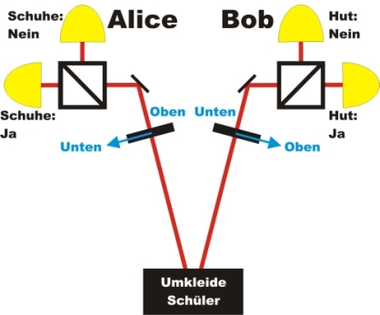

Verschränkung Kapitel 3:
Ist das Phänomen Verschränkung
mit
unserer alltäglichen Erfahrung erklärbar?
Im letzten Kapitel (Kapitel_2) wurde gezeigt, dass verschränkte Photonen bei beliebigen Strahlteilerverhältnissen immer das gleiche machen: sie werden entweder beide transmittiert oder beide refklektiert. Das gemeinsame Verhalten könnte durch eine gemeinsame "Absprache" der Photonen in der Quelle erklärbar sein. Die Photonen können aber in der Quelle noch nicht ahnen, welchen Winkel die Polarisationsdreher besitzen. Beide Winkel der Polarisationsdreher können exakt gleich oder verschieden sein. Eine "Absprache" der Photonenpaare in der Quelle müsste für alle möglichen Winkel erfolgen.
Auf der folgenden Seite wird die Möglichkeit der "Absprache" der Photonenpaare untersucht. Um einen möglichen Widerspruch verständlich herauszuarbeiten, wird das Alltagsbeispiel "Wahl der Kleidung an zwei Personen" verwendet. Zwei Personen entscheiden sich hierbei in der Umkleidekabine für ein bestimmtes Kleidungsstück und laufen mit diesen von Anfang an festgelegten Kleidungseigenschaften in zwei getrennte Kleidungsmessgeräte. Um die Untersuchung möglichst einfach zu machen, werden nur die beiden Kleidungsstücke Hut und Schuhe verwendet. Das Alltagsbeispiel kann z. B. als Rollenspiel in einer Schulklasse durchgeführt werden. Ein für die Universität geeigneter mathematischer Zugang erfolgt im Kapitel_D. Für die Widerlegung der Annahme der "Absprache" wird auf der folgenden Seite der Ansatz von Hardy [Har93] verwendet. Bei diesem Ansatz ist nur nur ein Teil der Photonenpaare verschränkt. Somit zeigen nicht alle Photonenpaare am Strahleiler exakt das gleiche Verhalten.
Verschränkung: Alltagsbeispiel Kleidung an Personen
Für das Alltagsbeispiel entscheiden sich zwei in der Kleidung verschränkte Personen in einer Umkleide für die Kleidungsstücke Hut oder Schuhe. Die beiden Personen laufen gemeinsam aus der Umkleide heraus und gehen getrennte Wege. Beide Personen laufen schließlich Kleidungsmessgeräte (Abb. 1). Ein Messgerät steht auf der Seite von Alice und ein Messgerät steht auf der Seite von Bob. Bei diesem Kleidungsmessgerät können nur zwei Eigenschaften der Kleidung gemessen werden. Wenn die obere Türe geöffnet wird, kann nur gemessen werden, ob die Person einen Hut trägt ("Ja") oder nicht ("Nein"). Wenn die untere Türe geöffnet wird, kann nur gemessen werden, ob die Person Schuhe trägt ("Ja") oder nicht ("Nein"). Durch ein Mechanismus können niemals gleichzeitig beide Türen geöffnet werden. An jeder Person kann somit immer nur eine Messung erfolgen. Der Experimentator (Alice bzw. Bob) kann die Personen vor und nach der Messung aufgrund des Sichtschutzes nicht sehen.
Abb. 1: Alltagsbeispiel: Kleidungsmessgerät von Alice mit Messobjekt Person
Alice und Bob haben jeweils das gleiche Messgerät auf ihrer Seite und messen unabhängig voneinander zufällig die mit dem oberen Fenster die Eigenschaft Hut und mit dem unteren Fenster die Eigenschaft Schuhe. Alice und Bob tragen das jeweilige Messergebnis von jeder Person in eine Liste ein (Abb. 2). Nach vielen Messungen treffen sich Alice und Bob bei einer leckeren Schokolade um ihre Listen zu vergleichen. Durch den Vergleich wollen die beiden herausfinden, nach welchem Prinzip oder nach welcher "Absprache" sich die beiden Personen in der Umkleide umziehen.
Abb. 2: Messergebnis von Alice
Alice und Bob stellen beim Vergleichen der Listen folgende Dinge fest:
Regel 1:
Alice misst oben und Bob misst oben: ca. 9% aller Personenpaare tragen beide einen Hut.
Regel 2:
Alice misst oben und Bob misst unten: Immer wenn die Person bei Alice einen Hut trägt, hat die Person bei Bob Schuhe an.
Regel 3:
Bob misst oben und Alice misst unten: Immer wenn die Person bei Bob einen Hut trägt, hat die Person bei Alice Schuhe an.
Ohne weiter auf die Liste zu schauen überlegen Alice und Bob die Regel 4: Alice misst unten und Bob misst unten: Wie oft haben beide Personen Schuhe an? Nach einigem Überlegen haben Alice und Bob mit Hilfe der Regeln 1-3 die Anwort gefunden:
Vermutung der Regel 4:
Alice misst unten und Bob misst unten: mind. 9% aller Personenpaare haben beide Schuhe an.
Wie kommen Alice und Bob so schnell auf ihre Vermutung? Der Gedankengang wird mit einer Animation erläutert. Bitte für den nächsten Schritt die graue Pfeiltaste benutzen.
Verschränkung: Verknüpfung Alltagsbeispiel und Realexperiment
Um die Regeln 1-3 und die Vermutung 4 zu überprüfen, wird das Beispiel der verschränkten Personen mit dem Experiment verknüpft (Abb. 3). Die Wahl der Messung oben oder unten erfolgt über die Einstellung am Polarisationsdreher. Im Experiment wird eine Polarisationsdreher verwendet, die nur zwei Einstellungen zulässt (Abb. 4). Einstellung rechts bedeutet Messung oben, Einstellung links bedeutet Messung unten. Der Strahlteiler ist der Entscheider: Wenn die Person die entsprechende Kleidung trägt, wird die Person am Strahlteiler durchgelassen: "Ja". Wenn die Person die entsprechende Kleidung nicht trägt "Nein", wird diese am Strahlteiler abgelenkt. Die beiden Detektoren nach dem Strahlteiler zeigen das jeweilige Ergebnis an. Jedes Personenpaar in unserem Alltagsbeispiel entspricht im Experiment einem Photonenpaar.

Abb. 3: Übertragung des Kleiderbeispiels auf das Realexperiment

Abb. 4: Wellenplatte mit nur zwei möglichen Einstellungen:
links (y) = Messung unten (Schuhe), rechts (x) = Messung oben (Hut)
Verschränkung: Überprüfung der drei Regeln und der Vermutung
Um die Regeln 1 - 3 und die Vermutung zu überprüfen gibt es zwei Möglichkeiten:
Möglichkeit 1:
Eine eher mühsame Möglichkeit ist die Überprüfung der Regeln durch den Vergleich der beiden Listen (Abb. 2) von Alice und Bob. Für diese Listen wurden 5000 Messungen mit verschränkten Photonenpaaren durchgeführt. Die Einstellung des Polarisationsdrehers für die Messung oben oder unten erfolgte automatisch über eine Zufallszahl (Quantenzufall aus gespeicherten Daten). Die beiden Listen sind in einem Excel-File enthalten [Download]. Zum Vergleichen sollten mindestens 200 Messungen ausgedruckt und mit Farbmarkierungen ausgewertet werden. Überprüfen Sie mit den Farbmarkierungen zunächst die Regeln 1-3. Wenn diese Regeln bestätigt wurden, überprüfen Sie die Regel 4. Gibt es hier einen Widerspruch? Wie kann dieser erklärt werden?
Möglichkeit 2:
Eine wesentlich einfachere Möglichkeit ist die Überprüfung der Regeln direkt am Experiment. Im folgenden interaktiven Experiment kann die Messung oben und unten mit den zwei grauen Tastern unter den Polarisationsdrehern frei gewählt werden. Eine Erklärung kann eingeblendet werden. Überprüfen Sie zunächst die Regeln 1-3.
Bei der Regel 1 reicht für die Bestätigung ein Wert zwischen 6% - 15% aus. Hierfür müssen mindestens 100 Photonenpaare gemessen werden (Button Dauermessung). Wenn diese Regeln bestätigt wurden überprüfen Sie die Regel 4 auch mit mindestens 100 Photonenpaaren. Wie kann das Messergebnis erklärt werden?
Beobachtung:
Die Regeln 1-3 können mit dem Experiment ohne Probleme bestätigt werden. Nun aber zu Regel 4: Die Vermutung war, dass bei der Messung Alice unten und Bob unten bei ca. 9% der Messungen beide Personen Schuhe tragen müssen. Das Experiment zeigt aber deutlich, dass niemals die beiden verschränkten Personen bei der Messung Alice unten und Bob unten Schuhe tragen. Die Wahrscheinlichkeit beträgt 0%. Die letzte Regel muss somit neu formuliert werden:
Regel 4:
Alice misst unten und Bob misst unten: niemals haben beide Person gleichzeitig Schuhe an.
Dies ist ein starker Widerspruch zu unserer Annahme, dass die Personen von der Quelle an fest definierte Kleidungseigenschaften besitzen. Wie kann das Ergebnis mit der Regel 4 von zwei realen Personen (z. B. Schüler im Klassenzimmer) mit der Kleidung realisiert werden? Es gibt verschiedene Lösungen, die in einem Rollenspiel gefunden werden können. Eine mögliche Lösung wird im nächsten Abschnitt diskutiert.
Verschränkung: Anpassung des Alltagsbeispiels
Die im Experiment gefunden Regeln 1-4 können auch im Rollenspiel "Kleidung an Personen" erfüllt werden. Dazu sind allerdings kleine Änderungen im Ablauf notwendig. Beide Personen starten wieder in der Umkleide. Die Person, die zu Alice geht, kleidet sich normal in der Umkleide an. Die Person, die zu Bob geht, kennt die Kleidung des Partners und nimmt sowohl die Schuhe als auch den Hut in der Hand zum Messgerät mit. Die Person befindet sich somit in einem undefinierbaren Kleidungszustand. Die Person im undefinierbaren Kleidungszustand verlässt die Umkleide etwas später.
Sobald die angekleidete Person bei Alice sieht, welche Türe geöffnet wird, teilt sie dies der Person bei Bob sofort durch lautes Zurufen mit. Die Person bei Bob kennt noch aus der Umkleide die Kleidung des Partners und durch den Zuruf auch die Messgröße am Partner. Sobald die Person mit der undefinierten Kleidung sieht, welche Messtüre bei ihr aufgeht, zieht sie das entsprechende Kleidungsstück nach den Regeln 1-4 ganz ganz schnell an. Die Regeln 1-4 wären somit mit dem Kleidungsbeispiel erklärbar.
Kommunikation über Schall:
Angenommen einzelne Photonen könnten sich durch akustische Signale Informationen mitteilen. Schall breitet mit einer Geschwindigkeit von ca. 340m/s aus. Im Experiment werden beide Photonen um maximal 10ns (0, 000 000 01s) versetzt gemessen. Innerhalb der 10ns kann der Schall eine Strecke von 0,003mm zurücklegen. Im oberen Experiment stehen die Messgeräte ca. 200mm voneinander entfernt. Eine Kommunikation der Photonen über akustische Signale ist somit ausgeschlossen. Im Kleidungsbeispiel heißt dies, dass die Personen nicht über Schall kommunizieren dürfen.
Kommunikation über elektromagenetische Wellen:
Angenommen einzelne Photonen könnten sich durch elektromagnetische Wellen (Radiowellen, Lichtpulse,...) Informationen mitteilen. Elektromagnetische Wellen haben eine Ausbreitungsgeschwindigkeit von 300.000.000 m/s. Bei einem Zeitunterschied von 10ns könnte das Signal 3m zurücklegen. Das obere Experiment könnte somit über die Informationsübertragung mit elektromagnetischen Wellen erklärt werden. 1998 konnte diese Vermutung in einem ähnlichen Experiment in Innsbruck wiederlegt werden [Wei98]. Die beiden Messgeräte standen dabei 400m voneinander entfernt. Die Einstellungen der Wellenplatten erfolgte erst nach dem Verlassen der Photonen aus der Quelle mit Quantenzufallsgeneratoren. Die Datenerfassung fand bei Alice und Bob vollkommen getrennt voneinander statt. Eine Kommunikation der beiden Photonen über elektromagnetische Wellen ist somit ausgeschlossen. Im Kleidungsbeispiel heißt dies, dass die Personen nicht über das Handy oder über Lichtsignale kommunizieren dürfen. Wie kann das Verhalten der verschränkten Photonen nun im Alltagsbeispiel realisiert werden ?
Verschränkung: Realisierung mit Alltagsbeispiel?
Das Kleidungsbeispiel ist nur dadurch erklärbar, dass sich beide Personen bis zum Messgerät nicht für ein Kleidungsstück entscheiden. Beide Personen befinden sich somit bis zur Messung in einem undefinierbaren Kleidungszustand. Eine vorherige Absprache in der Umkleide ist ausgeschlossen. Erst im Augenblick der Messung entscheiden sich beide Personen in Abhängigkeit der anderen Person für Hut oder Schuhe. Die "Kommunikation" zwischen den beiden Personen muss mit sofortiger und instantaner Wirkung ohne Zeitverlust erfolgen, was in unserer klassischen Welt nicht möglich ist. Verschränkung kann im Rollenspiel Kleidung an Personen und somit in unserer Alltagswelt nicht realisiert werden.
Übertragen auf verschränkte Photonenpaare heißt dies: Jedes Photon des Paares befindet sich bis zur Messung in einem undefinierbaren Polarisationszustand. Erst während der Messung nehmen die einzelnen Photonen in Abhängigkeit vom Partnerphoton und von der Messgröße instantan eine bestimmte Polarisation an. Das Phänomen Verschränkung ist mit unserer klassischen Lebenswelt nicht erklärbar. Verschränkung ist und bleibt ein Phänomen in der Quantenwelt.
Einstein kannte die Verschränkung nur aus theoretischen Überlegungen und nannte das Verhalten der Quantenobjekte "spukhafte Fernwirkung". Einstein distanzierte sich eindeutig von dieser Vorstellung und sah die Quantenphysik als unvollständig an. Mit dem oberen Experiment können wir Einstein widersprechen: seine "spukhafte Fernwirkung" bei verschränkten Quantenobjekten ist allgegenwärtig.
Verschränkung: Gibt es doch noch weitere Erklärungen?
Physiker möchten jede denkbare Möglichkeit ausschließen, mit der das Phänomen Verschränkung doch noch mit unserer alltäglichen Welt zu erklären ist. Nachdem die Kommunikation über Schallwellen und elektromagenetische Wellen bereits ausgeschlossen wurde, gibt es eine sehr unwahrscheinliche Möglichkeit, wie das Experiment erklärt werden kann: Die Photonendetektoren im Experiment registrieren nur 50% aller eintreffenden Photonen! Vorstellbar wäre vor jedem Detektor ein "Dämon", der bestimmt welche Photonen der Detektor registrieren darf und welche nicht. Der Dämon wählt z. B. von 100 eintreffenden Photonen genau die 50 Photonen aus, die für den Experimentator nach verschränkten Photonenpaaren aussehen könnten. Diese unwahrscheinliche Möglichkeit wurde experimentell überprüft und mit verschränkten Ionen 2001 widerlegt [Row01]. Bei dem Experiment konnten die Detektoren 100% aller eintreffenden Ionen nachweisen. Ein "Dämon" vor jedem Detektor konnte somit ausgeschlossen werden.
Im Alltagsbeispiel Kleidung an Personen gibt es das Detektionsproblem nicht. Jede Person wird bei einer Messung mit einer Wahrscheinlichkeit von 100% registriert.
Kritische Physiker waren mit dem neuen Verschränkungsexperiment immer noch nicht zufrieden. Die Detekoren konnten zwar alle Ionen nachweisen, allerdings standen die Messgeräte ziemlich nahe aneinander. Eine Kommunikation über elektromagnetische Wellen wäre bei diesem Experiment möglich gewesen. Kritiker stellen sich jetzt vor, dass bei 100% Detektionseffizienz die Photonenpaare plötzlich über elektromagnetische Wellen kommunizieren könnten. Die Photonenpaare suchen sich gerade immer die klassische Möglichkeit aus, die noch machbar ist. Entweder erreichen die Photonenpaare die Verschränkung über die geringe Detektionswahrscheinlichkeit oder über die Kommunikation mit elektromagnetischen Wellen. Um diese wechselnden Möglichkeit auszuschließen müsste es ein Experiment mit weit voneinander entfernten Messstationen und 100% Detektionswahrscheinlichkeit geben. Bisher konnte dieses Experiment noch nicht ausgeführt werden. Es gibt hierzu sehr viele experimentelle Ansätze [Fry95], [Moe04], [Gar05], die in den nächsten Jahren realisiert werden sollen. Die endgültige Antwort, ob das Phänomen Verschränkung doch noch mit unserer alltäglichen Erfahrung erklärbar sein könnte ist somit Gegenstand der aktuellen Forschung. Man erwartet allerdings nicht, dass plötzlich doch eine "Absprache" der Photonen oder ein Dämonen in irgendeiner Form festgestellt werden kann.
Neben den genannten Möglichkeiten gibt es weitere Interpretationen wie das Phänomen Verschränkung erklärt wrden kann. Als Beispiele sind hier die die Bohmsche Mechanik [Boh52-1], [Boh52-2] oder die "viele Welten Theorie" [Eve57], [Dew73] genannt. Beide Theorien können experimentell nicht widerlegt werden und werden von vielen Physiker abgelehnt.
Originaldaten aus dem Experiment: Einzelereignisse, Liste Alice&Bob,
Zurück zur Übersicht [klick]
Autor: P. Bronner, Mai 2008